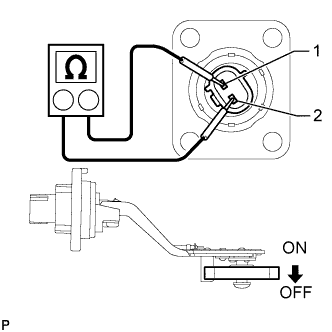

OIL LEVEL SENSOR > INSPECTION |
| 1. INSPECT ENGINE OIL LEVEL SENSOR |
Heat the switch to higher than 60°C (140°F) in an oil bath.
 |
Measure the resistance according to the value(s) in the table below.
| Tester Connection | Switch Condition | Specified Condition |
| 1 - 2 | ON at 20°C (68°F) | Below 1 Ω |
| OFF at 20°C (68°F) | Below 1 Ω | |
| ON at 60°C (140°F) | Below 1 Ω | |
| OFF at 60°C (140°F) | 10 kΩ or higher |